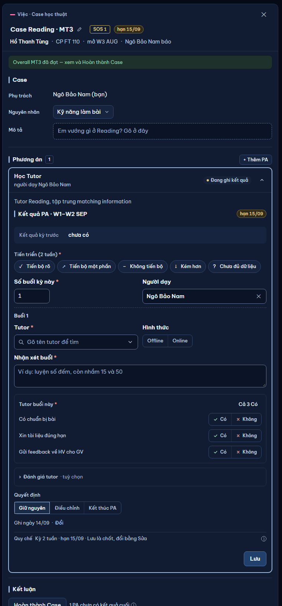
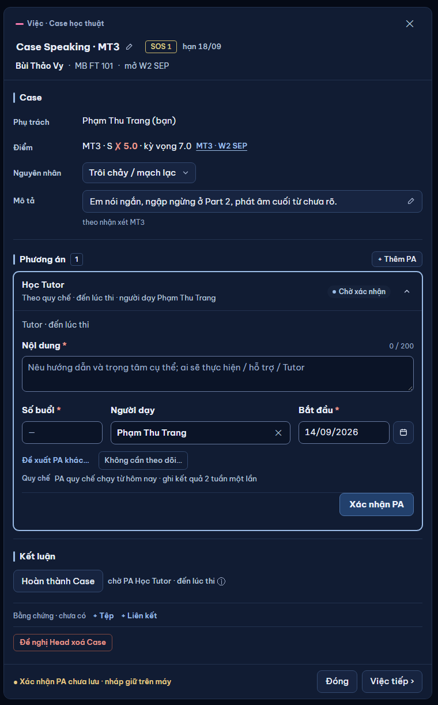
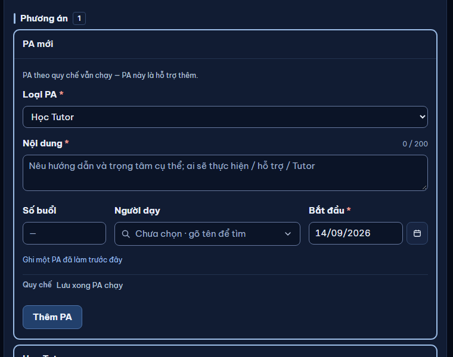
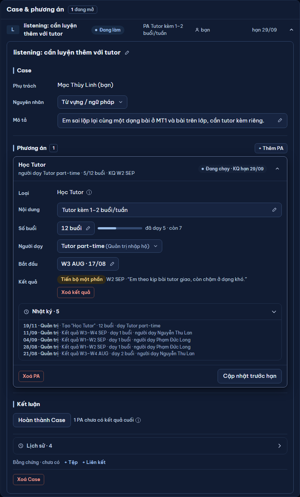
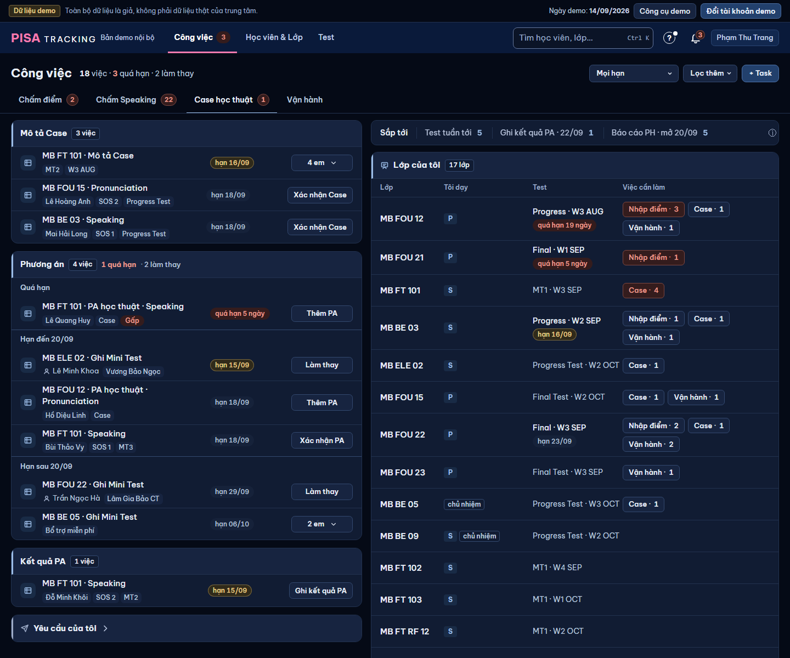

Đề bài docs/superpowers/specs/2026-11-19-tutor/05-de-bai-mockup.md mục Ⓣ1 (R1.1–R1.25) · luật 02-luat.md TU1–TU19 · workflow 03-workflow.md mục 3, 4. Nâng cấp trên mockup nền đã duyệt: ① K4c (panel Ghi kết quả PA) · ⑫ C1–C4 (dòng gộp, lưới, "Mở đầy đủ") · ⑬ A (dải Sắp tới) · ③ K1, K3 (thẻ PA, dòng quy chế) · ⑤ ô chọn mẫu A, Q20–Q25. Ảnh TRƯỚC chụp web thật (seed, cổng riêng) — đặt cạnh khung SAU ở từng mục.
Dữ liệu bịa: GV bộ môn Đinh Thu Hằng (Listening, Reading · Monbay). Hôm nay thứ Năm 19/11/2026 · W3 NOV. Kết quả PA hạn thứ Ba (24/11 · 01/12); việc "Kết quả PA" chỉ có từ hạn − 2 ngày (21/11 là đợt đặt lại một lần — 00-hien-trang.md mục 4). Tutor bịa: Mai Thảo Vy, Quách Hữu Phúc (danh bạ) · GV dạy tutor: Trần Ngọc Hà.
Nền vàng viền đứt = chú thích cho người duyệt, không lên web. Bấm thử: ô Có / Không (bấm lại = bỏ chọn), "Cả 3 Có", "Đánh giá thêm", "▾" của khối PA đang chạy, "n PA ▾".
1Thứ tự ô: Tiến triển * → Quyết định * → Số buổi * [a] / [b] (chữ trong ô "đã học" / "dự kiến") → Tutor * (ô chọn mẫu A, một ô cho cả kỳ) → Nội dung * (n / 300, ngưỡng 8) → khối 3 nút Có / Không (chỉ khi ô Tutor có tên; không *; bấm lại = bỏ chọn; "Cả 3 Có") với "Đánh giá thêm" gập bên trong → "+ Tutor khác" · 2a = 0 → chỉ còn Tiến triển · Quyết định · Số buổi · 3bỏ "Người dạy kỳ này", "Hình thức", tiêu đề "Buổi 1", dấu * ở 3 nút; bối cảnh đầu form bỏ "Người dạy" · 4chân: Đóng · Lưu nháp · Lưu (mở từ danh sách còn việc kế → "Lưu · việc tiếp ›"); lưu nháp → "✓ Đã lưu nháp · giờ", ở lại · 5b và Tutor điền sẵn từ kỳ trước → một kỳ thường GV gõ tối đa 5 ô: Tiến triển · Quyết định (mặc định Giữ nguyên) · a · Tutor · Nội dung.

1Xác nhận PA Tutor (một em, trong thẻ PA ở panel Case ① / ③): bỏ ô "Số buổi *" và ô "Người dạy" → còn Nội dung * + Bắt đầu * + Xác nhận PA (TU1, TU11 — gỡ kẹt 133 PA) · 2"Xác nhận PA · n em" (lô): bỏ hai cột Số buổi / 2 tuần · Người dạy · 3Thêm / Sửa PA loại Tutor: bỏ "Người dạy"; "Số buổi" đổi nhãn "Tổng số buổi", tuỳ chọn. PA loại khác (Tự học) không đổi.


1Dòng tóm tắt thẻ: kỳ gần nhất "2 / 2 buổi · Mai Thảo Vy"; có nháp → nhãn "nháp 1 / 2 · 18/11" (bấm = mở form, cùng nguồn với khối PA đang chạy); không còn "người dạy …" · 2lịch sử: mỗi lần ghi một khối "Kỳ W1–W2 NOV · 2 / 2 buổi" → mỗi dòng tutor "{tên} · {số buổi khi > 1 dòng}: {nội dung}" + dấu ✓ / ✗ kèm chữ chỉ khi có trả lời + sao nếu có · lần ghi cũ (mỗi buổi một dòng, có Hình thức) hiện như cũ "Buổi n · tên · Offline" · 3TVV chỉ xem: không nút, không nhãn nháp bấm được (nháp vẫn hiện chữ — TVV có quyền xem Case).

1Dải đầu khối cùng dáng dải nhóm (V18) nhưng vạch trái trung tính + chip đếm mờ "9 PA" + ⓘ ("PA bạn đang giữ, chưa tới hạn ghi kết quả — không tính vào số việc") — không cộng vào "18 việc", badge tab "Case học thuật 3", badge menu, chuông (ảnh: số giữ nguyên) · 2gom theo lớp như nhóm trên: dòng lớp "MB FT 101 · Kỳ W3–W4 NOV · hạn 24/11 · 4 PA ▾" — bấm dòng = lưới (mục E), "4 PA ▾" = khay em · 3dòng em: tên (link hồ sơ) · tên PA · thẻ phụ "kỹ năng · MT" · hạn kỳ màu thường · phải: nhãn "nháp 1 / 2 · 18/11" hoặc nút phụ "Ghi nháp" → mở form mục A (Lưu nháp cạnh Lưu) · 4mọi loại PA (Tutor, Tự học, Bổ trợ…) · > 10 dòng → gập mặc định, nhớ theo người · 5dải "Sắp tới" (⑬) bỏ cụm "Ghi kết quả PA", giữ Test · Báo cáo PH.

1Dòng PA Tutor thêm cụm [a] / [b] + ô Tutor (mẫu A, hẹp) trước ô Nhận xét (= Nội dung); dòng PA khác để trống hai ô đó, cột không co → thẳng hàng · 23 nút, Đánh giá thêm, "+ Tutor khác" không ở lưới → "Mở đầy đủ" (đã có) · 3trạng thái dòng Tutor: chưa ghi · nháp · thiếu (a ≥ 1 mà chưa có Tutor / Nội dung < 8) · sẵn lưu · lỗi + Thử lại · đã lưu gập + "Sửa"; dòng a = 0 không cần Tutor / Nhận xét · 4chân giữ ba nút như ⑫. TRƯỚC: seed không có lớp nào ≥ 2 PA cùng kỳ → lấy ⑫ C2 (GD-20c, đã vào mã): PA Tutor chỉ có "Mở đầy đủ".